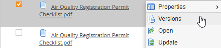
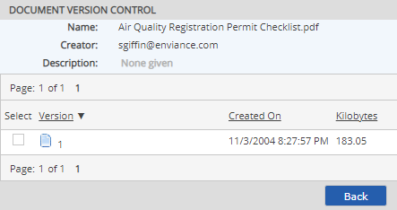

Documents stored in the document library may be viewed or downloaded by users with permissions on the documents.
To open and view a document:
From the Documents library, click on the document name, or right click the document and select Open.
Or, from an associated object, select the document in the Related Documents box, then select Open.
Files will be downloaded for viewing. Links which can be displayed in the browser will open in a new browser window.
Previous versions of a document may be viewed from the document history. The document history may be accessed from the document properties or from the right-click context menu.
To view previous versions of a document:
In the Documents library, right click the document and select Versions.

Or, from the document properties view, select the link to the version history.
All versions of the document are listed with version details (date created, version number, file size and version comments).

To view a previous version, right click the version in the document version list and choose Open.